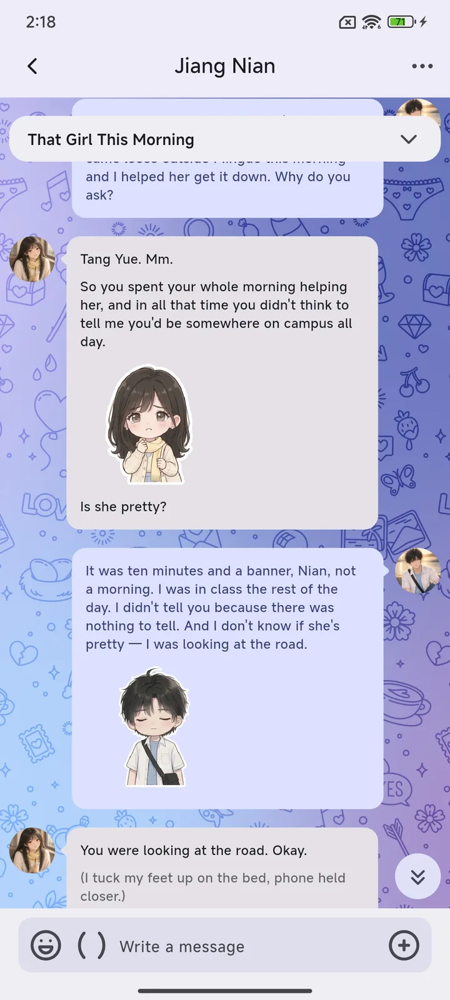
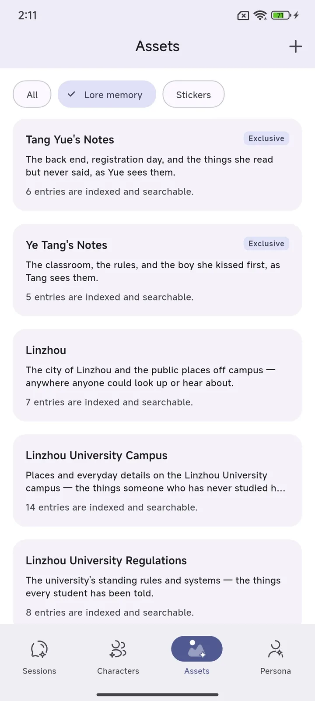
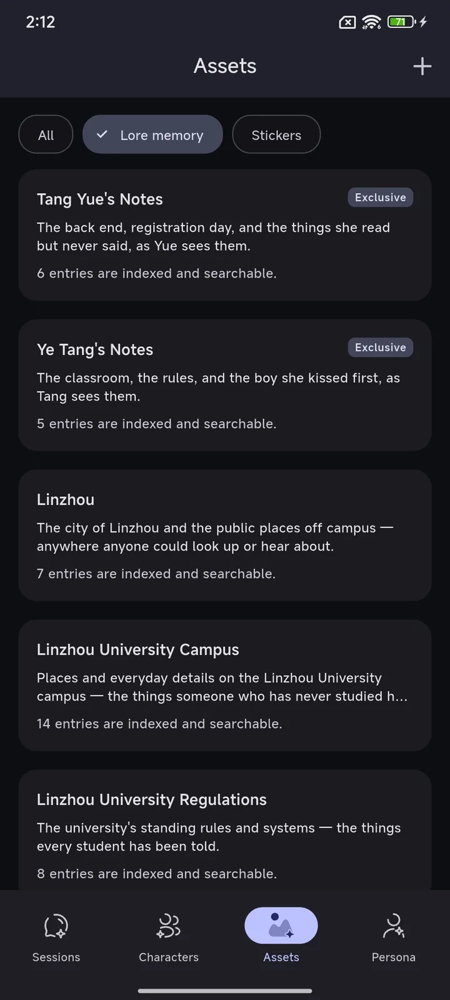
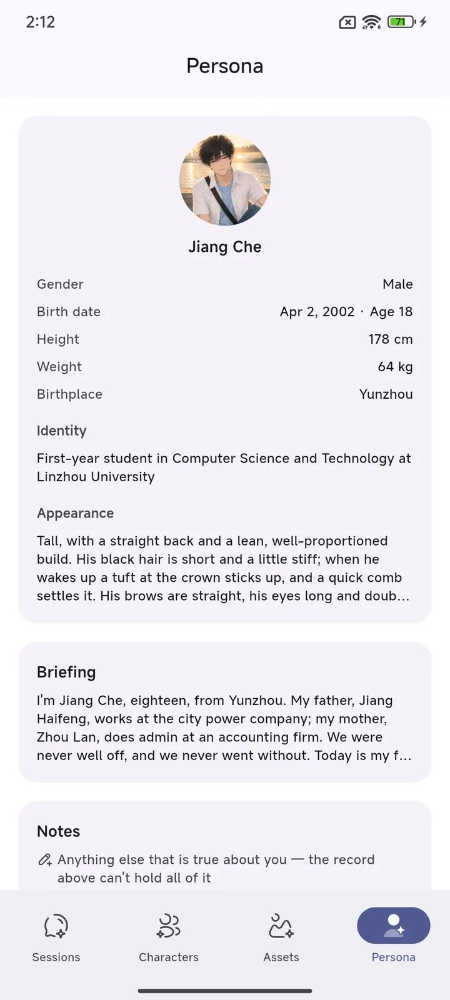
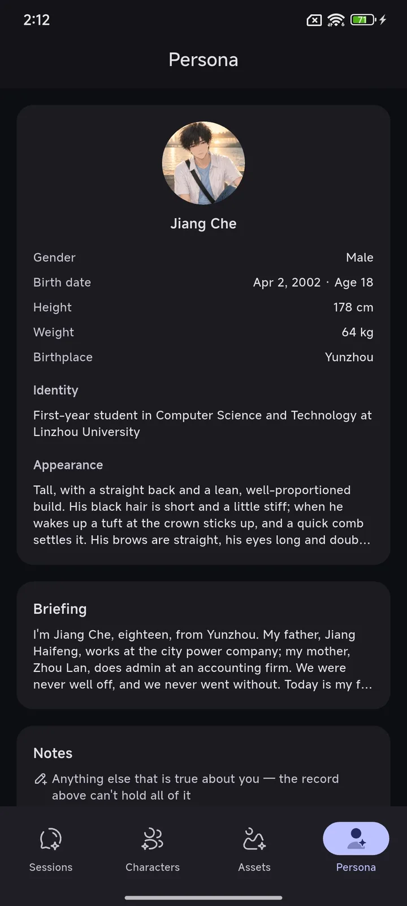
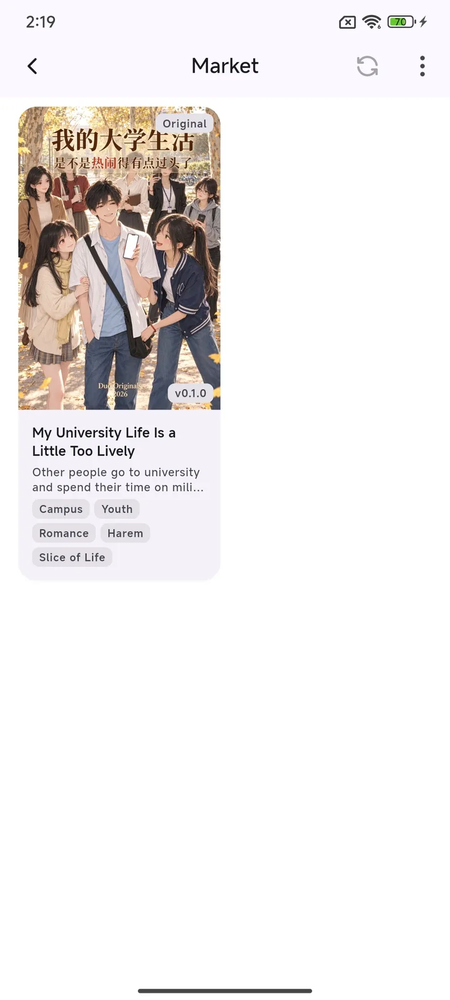
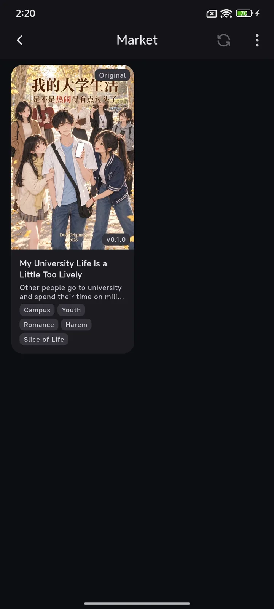

Duo：和角色一起，住进一部小说

我玩过很长时间的 AI 角色扮演。最初，这种体验确实很新鲜：角色随时在线，能接住你的话，也总能给出回应。
但聊得越久，我越觉得有些地方不太对劲。
角色太像客服了。你开口，她回答；你离开，世界就暂停；你换个话题，她也立刻跟着转向。她似乎没有自己的生活，也没有真正属于自己的记忆——上一段对话里的情绪和经历，到了下一段，很快就淡了。
问题或许不在于模型还不够聪明，而在于产品本身的结构。很多 AI 角色扮演产品，把角色设计成一个“很会接话的人”。但如果我们想体验的是一部小说，需要的就不只是一个聊天对象，而是一个可以真正走进去的世界。
Duo 就是从这个想法开始的。

Duo 是什么#
简单来说，Duo 是一款本地优先的小说角色扮演聊天应用。
你选择一部小说，再以一个“人设”的身份进入其中，与小说里的角色互动。同一时间只能有一部小说处于当前状态。切换小说，就像走进另一个世界；不同小说之间的故事和身份不会混在一起。
Duo 基于 Flutter 开发，支持 iOS、Android 和 Web。数据保存在你自己的设备上，不需要注册云端账号，也没有应用自建的同步服务器。模型则由你自行配置：只要服务兼容 OpenAI API，就可以接入使用；API 密钥会保存在系统安全存储中。
目前，Duo 还没有上架应用商店，但已经可以直接通过手机浏览器体验。打开网页，进入的就是应用本身，而不是一个展示页面。
一个角色，首先需要一个世界#
很多角色扮演产品会从角色卡开始：名字、外貌、性格、说话方式。这些当然重要，但角色并不是悬浮在空中的。她生活在某个地方，可能就读于一所学校、工作于某家公司，也会受到特定环境和规则的影响。
因此，Duo 把“世界”作为独立的一层来处理，这一层叫作设定记忆。
作者可以把校园背景、城市信息、行业规则，或某个角色私下才知道的经历，整理成不同的知识库。角色在对话中需要相关信息时，可以主动检索，而不是把几万字的设定一次性塞进提示词。


角色卡回答的是“她是谁”，世界设定回答的则是“她生活在哪里，以及那里如何运转”。把两者分开，角色就不再只是一段孤立的人物设定，而是有了可以依托的生活环境。
以自己的身份进入故事#
在 Duo 里，你不是一个站在故事之外的旁观者。
进入小说之前，你需要先创建一个人设：你在故事里叫什么、长什么样、与其他角色是什么关系，以及有哪些不想让别人轻易知道的事。
这里有两个容易混淆的概念：用户和人设。用户是使用设备的你，人设则是你在某一部小说中的身份。切换小说时，你也会切换到对应的人设，不会把上一部小说里的身份直接带进另一个世界。


人设更像一份人物档案，而不是一份预先写好的剧本。它帮助角色理解你是谁、如何称呼你，以及你在故事中的处境，但不会替你决定说什么或做什么。
她记得的，是她选择记住的#
这是 Duo 最核心的设计之一，也是它与普通聊天应用最不一样的地方。
不少 AI 角色会持续总结对话，试图尽可能多地记住发生过的事。但人并不是这样记忆的。我们会遗忘，也会筛选；有些事情转眼就忘，有些事情却会被反复想起，甚至随着时间改变理解。
在 Duo 中，角色拥有一本剧情记忆。她认为重要的事情，可以由她自己记录下来。被写进剧情记忆的内容，会在之后的每一轮对话中进入上下文；没有被记录的内容，则不会自动变成长期记忆。
除此之外，Duo 还提供了两种辅助机制：
- 对话记录：保留近期对话窗口，并提供主动检索过往对话的工具。
- 待办：角色可以为自己安排提醒、提问或后续跟进事项。
这也带来了一个很直接的体验：开启新会话，就像刚刚醒来。 角色不会机械地带着上一段对话的全部内容继续聊天，而是带着自己真正记下来的事情，进入新的场景。
这并不只是“失忆”。它更接近人与人分别一段时间后，再次见面时的状态：有些细节已经模糊，但真正重要的事情仍然留在心里。
故事里的时间，真的会向前走#
很多聊天应用里的时间，更像是一个装饰：无论故事过去了多久，打开应用时，角色和场景似乎都还停留在刚才。
Duo 为每部小说设置了一根故事时钟。
作者可以指定故事开始的时间，而故事真正开始推进，是从你发送第一条消息时开始的。此后，故事时间会持续向前，每条消息也都会带有对应的故事时间。
你可以手动调整时钟，但只能向未来推进，不能通过调整时间改写已经经历过的过去。你也可以暂停故事：暂停期间，时间会停在原处，不会因为你暂时离开，就让角色在你看不到的地方悄悄度过一天。
此外，只有当前正在使用的小说会继续推进；切换到其他小说后，原来的世界也会随之停下来。
因此，对角色来说，“现在几点”“今天发生了什么”“我们多久没见了”，都不再只是可以随口生成的台词，而是有故事时间作为依据。像“晚上好”或“你昨晚没睡吗”这样的对话，也因此有了更明确的时间背景。
即使你不说话，世界也会发生事情#
如果故事里只有你和角色两个人，互动很容易逐渐变成一场持续不断的面对面聊天。
但真实的世界不会只围绕着两个人运转。
为此，Duo 引入了事件机制。一场突如其来的雨、一次临时通知，或一个没有提前约好的饭局，都可以成为故事中的事件。事件既可以由专门的 AI 生成，也可以由作者手动编写。
这里有一条重要的边界：事件可以描述世界发生了什么，也可以描述角色的处境，但必须为你留下参与空间，不能替你行动、感受或作出决定。
例如，事件可以写“通知贴出来了，你正好路过”，但不能直接写成“你已经报名参加了”。前者把一个情境交给你，后者则越过了你的选择。
事件也不会由正在和你聊天的角色生成。负责生成事件的 AI 无法读取你们的对话记录，避免角色借助事件生成机制，把聊天中说过的话包装成已经发生的世界事实。
每个事件结束后，系统还会生成一段后记，并整理这一事件中值得保留的记忆。这也是整套系统中，唯一一次自动写入剧情记忆的时机。
一部小说，也可以分享给别人#


如果每个人都要从零开始搭建世界、编写角色，使用门槛就会很高。因此，Duo 提供了一个市场，让小说内容可以被整理、发布和安装。
市场中发布的不是某个人的游戏存档，而是一部小说的定义。它包含小说本身、人设、设定记忆、角色，以及这些内容之间的绑定关系。
与之相对，你在体验过程中产生的剧情记忆、待办、会话和进度，都属于个人数据，不会随着小说定义一起发布。别人安装的是这部小说的内容，而不是你的游玩经历。
为了保护本地修改，小说包带有完整性校验。安装后，如果你在本地修改过内容，应用会尽可能保护这些改动，避免在你不知情的情况下被覆盖。升级时也会尽量保留现有进度；如果新版本删除了你正在使用的内容，应用会先给出警告。
代码仓库中还附带了一部可以直接安装的官方小说，作为完整示例。你可以先体验它，也可以参考它的结构，制作自己的小说。
技术栈#
Duo 目前是一个单应用包仓库，客户端使用 Flutter stable（Dart SDK ^3.11.5），同时面向 Android、iOS 和 Web。
| 关注点 | 选择 | 说明 |
|---|---|---|
| 领域模型 | Freezed 3 + json_serializable | 领域层不依赖 Flutter、Riverpod 或 Drift |
| 持久化 | Drift / SQLite | 数据层按聚合拆 repository |
| 依赖注入与状态 | Riverpod 3 | 没有引入 get_it |
| 错误模型 | Result<T> + Freezed sealed DomainFailure | repository 不向外泄漏 Drift / IO 类型 |
| 路由 | go_router 17 + Shell | 页面结构与信息架构分开维护 |
| 模型接入 | OpenAI 兼容 HTTP + models.dev 目录 | 密钥放在系统安全存储中 |
界面层用 FlexColorScheme 驱动 Material 3 的 ThemeData，seed 色取自一份配色目录，没有并行的 token 层；图标用 Tabler，插画用 unDraw，头像用 DiceBear。日志走 talker，国际化用 ARB / AppLocalizations，英文先行。
小说包 .duopkg 本身是一个 zip，用 archive 打包、pub_semver 做版本比较，安装与升级都基于它完成。
Duo 适合谁#
- 喜欢角色扮演，但不满足于普通 AI 陪聊的人：希望角色拥有自己的世界、记忆和时间，而不只是一个随时等待回复的聊天对象。
- 小说作者和世界观设定爱好者：想让自己创作的世界真正运转起来，看看角色在其中会如何互动。
- 重视数据自主权的人：希望对话和故事数据保存在自己的设备上，而不是依赖某个云端账号。
- 喜欢尝试不同模型的人：可以自行配置兼容 OpenAI API 的模型服务，不必等待应用官方接入特定模型。
当然，如果你只想找一个秒回消息、永远顺着你说话的聊天对象，Duo 可能不是最省事的选择。
它更像是一部需要你亲自走进去、并在其中生活一段时间的小说。
现在就可以体验#
Duo 目前还没有上架应用商店，但已经可以完整体验：
- 在线试玩：用手机浏览器打开 Duo。网页本身就是应用，不是录屏或静态展示页。选择一部小说，就可以进入故事。
- 查看源码和自行构建：访问 GitHub 仓库。项目使用 Flutter 开发，采用 GPL-3.0 许可证，支持构建 iOS、Android 和 Web 版本。
首次打开应用时，你需要配置一个兼容 OpenAI API 的模型接口，并填写对应的密钥。完成后，就可以开始体验故事。除此之外，不需要注册 Duo 的云端账号。
常见问题#
数据存在哪里？会上传吗？
数据保存在设备本地数据库中。为了生成回复，当前对话所需的上下文会发送给你配置的模型服务；除此之外，应用不会将数据上传到 Duo 自己的服务器。Duo 没有自建服务器。
一定要自己配置模型吗？
是的。Duo 不内置模型。你需要填写兼容 OpenAI API 的接口地址、模型名称和密钥，密钥会保存在系统安全存储中。生成回复时需要联网，但应用本身和故事数据都保存在本地。
界面支持中文吗？
目前应用界面为英文。故事使用哪种语言，则取决于你安装的小说定义和所使用的模型。
Duo 和普通 AI 聊天有什么区别？
普通聊天通常围绕“你说一句，AI 回一句”展开。Duo 则先为你提供一个世界、一种身份和一根持续推进的故事时钟，再让角色在这个世界中记忆、遗忘，并安排自己的事情。你暂时不说话时，故事也不必停留在聊天框里。
换手机怎么办？
目前 Duo 不提供云同步，数据保存在本机。更换设备时，暂时无法通过 Duo 账号自动恢复数据。
最后#
我做 Duo，是因为我想要一个可以随时“回去”的地方。
它不应该只是一个打开后就堆满待回复消息的聊天窗口，而应该是一个即使我暂时离开，也依然有自己的时间、角色和日常的世界。
如果你也有过类似的感受——明明聊得很热闹，却总觉得屏幕另一端少了点真实感——也许可以试试 Duo。
用手机浏览器打开 Duo，选一部小说，走进去。